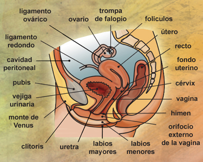
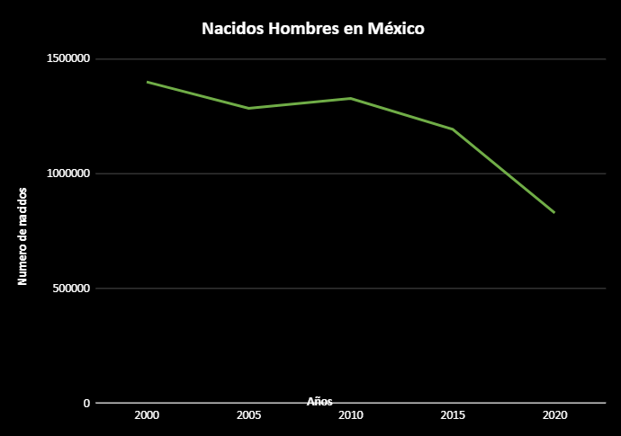
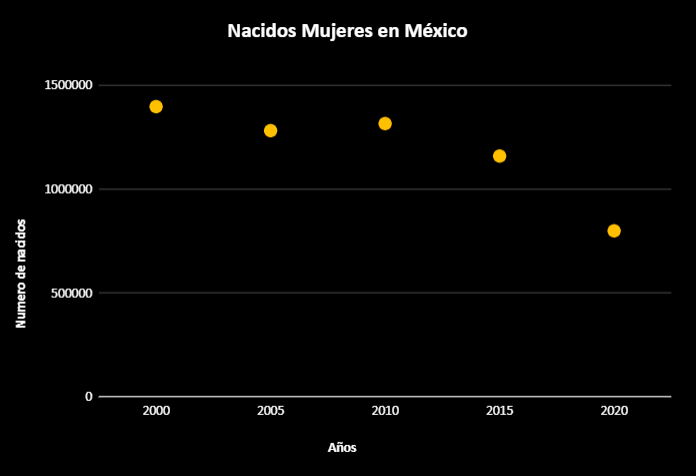
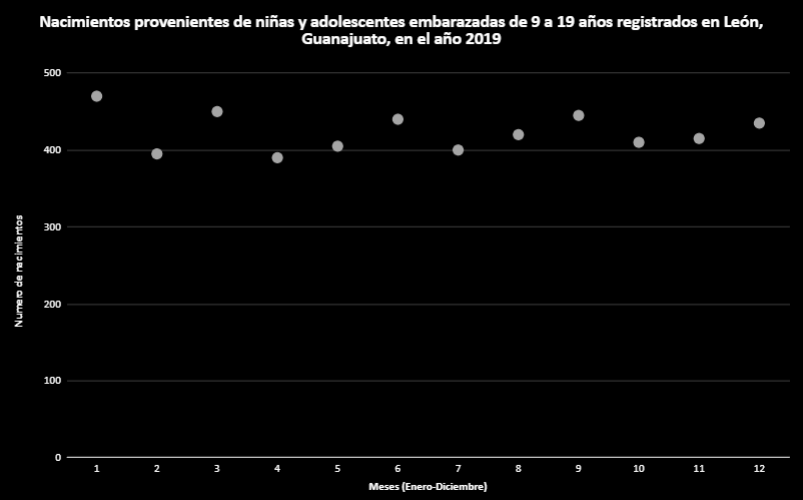
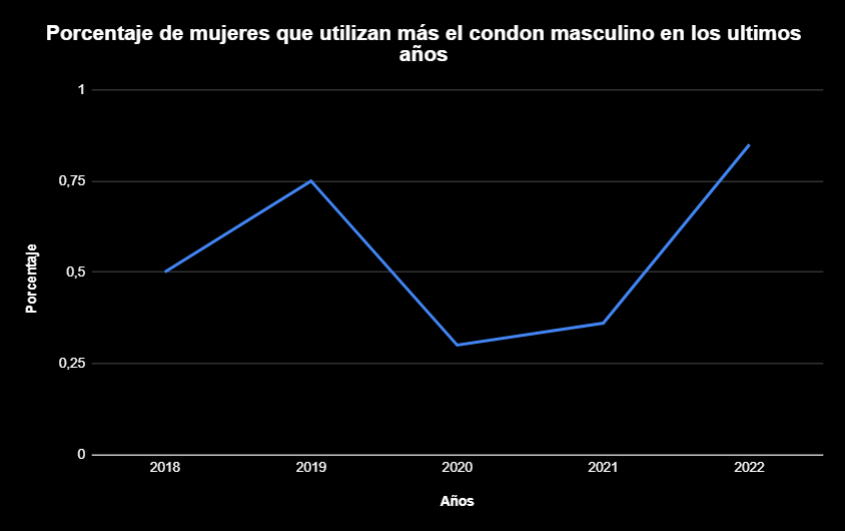
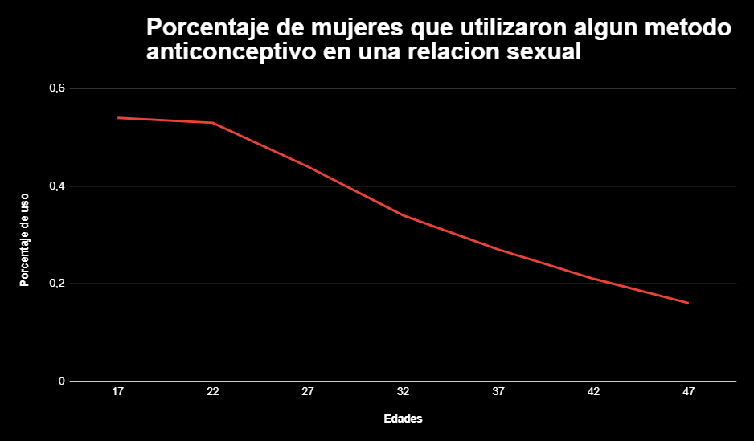
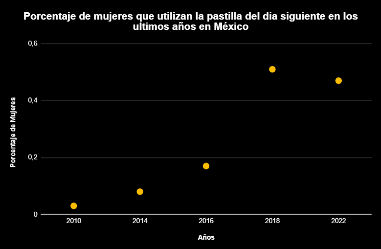
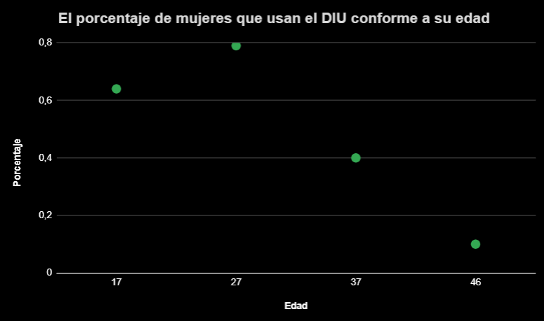

Integrantes:
- Rafael Aviña Luna #3
- María Fernanda Gómez Chowell #10
- Daniel Marcelo Ruiz Villalobos #28
- Roberto Ivan Tovar Mares #29
- Jorge Mauricio Verde Villaseñor #31
Desarrollo del ciclo celular y sus fases: El ciclo celular son todos los procesos y las etapas por las que la célula obtiene su crecimiento y alcanza su división celular. La célula pasa la mayor parte de su tiempo en la etapa llamada interfase, donde crece, duplica sus cromosomas y se prepara para la división. Una vez terminada esta etapa, la célula entra en la etapa mitótica (o etapa M) y completa su división. Las células resultantes, llamadas células hijas, comienzan sus respectivas etapas de interfase y empiezan así una nueva serie de ciclos celulares. (National Human Genome Research Institute [NHGRI], 2023)
En la etapa de la interfase, ocurren tres fases, la fase G1, la fase S y la fase G2. Fase G1: Durante esta fase, la célula crece físicamente copia los organelos y hace componentes moleculares que necesitará en etapas posteriores. Fase S: En la fase S, la célula sintetiza una copia completa del ADN en su núcleo. También duplica una estructura de organización de microtúbulos llamada centrosoma. Los centrosomas ayudan a separar el ADN durante la etapa mitótica. Fase G2: Durante la fase G2, la célula crece más, hace proteínas y organelos, y comienza a reorganizar su contenido en preparación para la mitosis. La fase G2 termina cuando la mitosis comienza. (Khan Academy, 2023) En la etapa mitótica (también llamada etapa M) la célula divide su ADN duplicado y su citoplasma para formar dos nuevas células. La etapa M implica dos procesos distintos relacionados con la división: mitosis y citocinesis. Durante la mitosis ocurren 4 fases: la profase, la metafase, la anafase y la telofase. Profase temprana: El huso mitótico empieza a formarse, los cromosomas comienzan a condensarse y el nucleolo desaparece. Profase tardía: La envoltura nuclear se descompone y los cromosomas se completan de condensar. Metafase: Los cromosomas se alinean en la placa metafásica. Anafase: Los microtúbulos empujan los polos y los microtúbulos cinetocóricos jalan los cromosomas hacia los polos. Telofase: Los cromosomas comienzan a descondensarse, el huso desaparece, la membrana nuclear y el nucleolo reaparecen. Después de la mitosis ocurre la citocinesis, donde ocurre la separación física del citoplasma en las dos células hijas. (Khan Academy,2023b)
(NHGRI, 2023)
(Khan Academy, 2023b)
Tipos de reproducción celular (asexual y sexual): La reproducción o división celular es el proceso en el que una célula madre se divide para formar a dos células hijas distintas. Se da en todas las formas de vida. (Editorial Etecé, 2021)
(Imagen de la fisión binaria (Editorial Etecé, 2021))
La reproducción asexual es aquella que requiere de un único organismo, que no necesita aparearse para formar nuevos individuos. Dado que no hay intervención de células sexuales, en la reproducción sexual no hay intercambio ni combinación de información genética. Cuando un organismo se reproduce de manera asexual, lo hace a través de métodos que consisten en la replicación o duplicación de su contenido genético, para dar origen a individuos nuevos genéticamente idénticos a sí mismo. Los tipos de reproducción asexual son: Gemación, Fragmentación, Fisión binaria, Esporulación, Apomixis, Partenogénesis y la Poliembrionía. Una ventaja de la reproducción asexual es que es rápida y simple, pues no se necesitan producir células especializadas (gametos) para realizarse. Una gran desventaja es la ausencia de variabilidad genética, básicamente los descendientes son idénticos al progenitor, a menos de que hayan mutaciones imprevistas (Editorial Etecé, 2022).
En los organismos eucariotas se aplican procesos más complejos de reproducción celular, debido a que están dotados de más de un cromosoma. Estos procesos son: la mitosis (anteriormente explicada) y la meiosis.
La meiosis es un proceso más complejo que la mitosis, y es la clave para la reproducción sexual, pues se producen las células sexuales o gametos (con la mitad de la carga genética), dotadas de variabilidad genética. Esto se da para aportar la mitad de la carga genómica durante la fecundación, y así obtener descendencia genéticamente única, evitando la reproducción asexual. A través de la meiosis, una célula diploide sufre dos divisiones consecutivas, para obtener así cuatro células hijas haploides (Editorial Etecé, 2021).
La reproducción sexual es aquella que requiere de dos organismos de distinto sexo para generar a un organismo nuevo, producto de la combinación de los materiales genéticos de los progenitores. Es característica exclusiva de los organismos eucariotas, o sea, de aquellos cuyas células poseen núcleo bien definido, y sobre todo de los pluricelulares. Se da conforme a distintos mecanismos, que conducen siempre a la fecundación: la unión de células sexuales provenientes de cada uno de los progenitores, para iniciar un proceso de multiplicación acelerada y conformar un cigoto, que posteriormente será embrión y finalmente un individuo nuevo de la especie, listo para incorporarse al ecosistema. El proceso de la reproducción sexual conforma varias etapas, que son: Gametogénesis, Fecundación, Desarrollo Embrionario y Nacimiento. La gran mayoría de los animales se reproducen de manera sexual, y se dividen en las siguientes categorías: Animales ovíparos (ponen huevos), Animales vivíparos (ocurre parto) y Animales ovovivíparos (el huevo se desarrolla en el cuerpo de la madre) (Editorial Etecé, 2022b).
(Editorial Etecé, 2021)
La meiosis tiene dos fases diferenciadas: meiosis I y meiosis II. Ambas tienen a su vez, 4 etapas al igual que la mitosis: profase, metafase, anafase y telofase.
En la meiosis I (también conocida como la fase reductiva) resultan dos células con la mitad de carga genética.
- Profase I:
Está compuesta por varias etapas. En la primera etapa el ADN se condensa en cromosomas. Luego, los cromosomas homólogos se aparean formando una estructura característica llamada complejo sinaptonémico, donde se produce el entrecruzamiento y la recombinación génica. Por último, los cromosomas homólogos se separan y la envoltura del núcleo desaparece.
- Metafase I:
Cada cromosoma, compuesto por dos cromátidas cada uno, se alinea sobre el plano medio de la célula y se une a los microtúbulos del huso acromático.
- Anafase I:
Los cromosomas homólogos apareados se separan y se mueven hacia polos opuestos. Cada polo recibe una combinación aleatoria de cromosomas maternos y paternos, pero solo un miembro de cada par homólogo está presente en cada polo. Las cromátidas hermanas permanecen unidas a sus centrómeros.
- Telofase I:
Uno de cada par de cromosomas homólogos está en cada polo. Se forma nuevamente la membrana nuclear. Cada núcleo contiene el número de cromosomas haploides, pero cada cromosoma es un cromosoma duplicado (consiste en un par de cromátidas). Ocurre la citocinesis, que resulta en dos células hijas haploides.
En la meiosis II (también conocida como la fase duplicativa y asemejada a la mitosis) se forman dos individuos enteros duplicando el ADN. Profase II: Los cromosomas se condensan. La envoltura del núcleo desaparece.
- Metafase II:
Los cromosomas se alinean sobre los planos medios de sus células.
Anafase II: Las cromátidas se separan y se mueven hacia polos opuestos.
- Telofase II:
Las cromátidas que llegan a cada polo de la célula son ahora los cromosomas. Las envolturas nucleares se forman de nuevo, los cromosomas gradualmente se alargan para elaborar fibras de cromatina, y ocurre la citocinesis. Las dos sucesivas divisiones de meiosis producen cuatro núcleos haploides, cada uno con un cromosoma de cada tipo. Cada célula haploide resultante tiene una diferente combinación de genes. (Editorial Etecé, 2021)
Anatomía y fisiología del aparato reproductor femenino y masculino:
Aparato reproductor femenino.
Los órganos del aparato reproductor femenino constan de genitales internos y externos.
Genitales internos:

- Vagina:
Es el órgano sexual femenino interno que se encuentra más hacia el exterior. Se extiende desde el útero hasta la vulva (genitales externos). Funcionalmente, facilita la menstruación, las relaciones sexuales y el parto. La vagina se encuentra de forma posterior a la vejiga urinaria y la uretra; y de forma anterior al recto.
- Útero:
Es un órgano muscular hueco ubicado en lo profundo de la cavidad pélvica. El útero se ubica de forma anterior al recto y de forma posterosuperior a la vejiga urinaria, y además se encuentra normalmente en una posición de anteversión (inclinado hacia la pared abdominal anterior) y ante flexión (inclinado hacia adelante en relación al cuello del útero).
- Ovarios:
Son gónadas femeninas bilaterales y equivalentes a los testículos masculinos. Liberan el óvulo (huevo) con el propósito de facilitar su fertilización. Además, actúan como glándulas endocrinas, secretando diversas hormonas necesarias para la fertilidad, la menstruación y la maduración sexual de la mujer.
- Trompas de falopio (uterinas):
Son órganos musculares bilaterales que se extienden desde los cuernos uterinos hasta los polos superiores de los ovarios. Las trompas uterinas son el sitio habitual para la fertilización del óvulo. También transportan el cigoto resultante al útero para su implantación.(Anatomía y fisiología femeninas, s. f.)
Genitales externos:
- Monte del pubis (monte de venus):
Es una masa de tejido adiposo subcutáneo ubicada anterior a la sínfisis púbica. La piel que recubre el monte del pubis está cubierta con un parche triangular de vello púbico.- Labios mayores:
son dos pliegues cutáneos longitudinales cubiertos de vello púbico. Son la parte más lateral de la vulva y se extienden desde el monte del pubis hasta el periné. La hendidura entre los labios mayores se llama hendidura pudenda. Contiene los labios menores y el vestíbulo de la vagina. Se fusionan anteriormente (comisura anterior) y posteriormente (comisura posterior).- Labios menores:
Dos pliegues cutáneos longitudinales, delgados y sin pelo que se encuentran entre los labios mayores. Rodean el vestíbulo de la vagina y sus orificios uretral y vaginal. Contribuyen a la formación del prepucio y el frenillo del clítoris.- Clítoris:
Órgano eréctil, responsable de las sensaciones sexuales. Análogo al pene masculino. Situado en la parte más superior del vestíbulo de la vagina, el clítoris está rodeado por la parte anterior de los labios menores. Tiene tres partes: tallo, cuerpo y glande. El cuerpo consta de dos cuerpos cavernosos y dos puntos de unión (pilares). Gracias a sus abundantes terminaciones sexuales, constituyen la mayor excitabilidad sexual de la mujer.- Vestíbulo de la vagina:
Región entre los labios menores. Contiene el orificio vaginal, la abertura de la uretra femenina y las aberturas para los conductos excretores de las glándulas vestibulares mayor y menor.- Glándulas vestibulares:
Hay dos tipos: mayores y menores. Las mayores se encuentran a cada lado del vestíbulo de la vagina y las menores entre los orificios uretral y vaginal.- Bulbo del vestíbulo:
Par de tejidos eréctiles subcutáneos. Se extienden a cada lado del vestíbulo de la vagina y se unen frente a los orificios uretrales. (Vélez, 2023)Aparato Reproductor Masculino.
La anatomía del aparato reproductor masculino incluye al escroto, los testículos, los ductos espermáticos, las glándulas sexuales y el pene. Estos órganos trabajan en conjunto para producir espermatozoides (el gameto masculino) y otros componentes del semen. Estos órganos también funcionan en conjunto para expulsar el semen del cuerpo y depositarlo. (Anónimo, 2015)- Escroto:
El escroto es una “bolsa” de piel que cuelga debajo del pene; contiene los testículos y los mantiene a la temperatura correcta. Si hace mucho frío, el escroto lleva los testículos más cerca del cuerpo. (Anónimo, 2023)- Testículos:
Los testículos son 2 glándulas con forma de pelota ubicadas dentro del escroto. Son los encargados de producir el esperma y hormonas como la testosterona. También son conocidos como las“gónadas masculinas”.- Epidídimo:
Es un conducto en el que el esperma madura. Conecta cada testículo con cada conducto deferente y almacena el esperma antes de eyacular.- Conducto deferente:
Es un conducto largo y angosto que, durante la eyaculación, transporta el esperma desde el epidídimo hasta las vesículas seminales. Hay 2, uno conectado a cada epidídimo.- Vesículas seminales:
Las vesículas seminales son 2 órganos pequeños que producen el semen, el fluido por el cual se mueve el esperma. Se encuentran ubicadas debajo de la vejiga.- Próstata:
La próstata produce un líquido que ayuda al esperma a moverse; es aproximadamente del tamaño de una nuez o de una pelota de golf. Es muy sensible a la presión o al tacto, lo que muchos encuentran placentero.- Glándulas de cowper:
Producen un fluido conocido como “pre eyaculación”, o “líquido pre eyaculatorio”, que prepara a la uretra para la eyaculación. Este líquido reduce la fricción para que el semen pueda desplazarse más fácilmente. Están ubicadas debajo de la próstata y conectadas a la uretra. También se denominan “glándulas bulbouretrales”.- Uretra:
Es un conducto que transporta la orina, la pre eyaculación y el semen a la abertura de la uretra para que salgan del cuerpo.- Cremáster:
Es un músculo que acerca el escroto y los testículos al cuerpo cuando tienes frío, cuando te excitas o cuando recibes caricias en la parte interna del muslo. (Anónimo, 2023)- Recto:
Porción más baja del intestino grueso que llega hasta el ano. (Anónimo, 2015). Su función es donde el organismo almacena la materia fecal. (Anónimo, 2020)- Vejiga:
Es un órgano hueco de forma triangular, situado en el abdomen inferior. Se sostiene en su lugar por los ligamentos que se encuentran unidos a otros órganos y a los huesos pélvicos.(Anónimo, 2015). En la vejiga se acumula la orina procedente de los riñones hasta que se elimina del cuerpo. (Anónimo, 2022)- Pene:
El pene es el órgano masculino utilizado para la micción y la relación sexual. (Anónimo, 2023). Es la parte exterior del aparato reproductor masculino y está localizado arriba del escroto y abajo del ombligo. (Anónimo, 2015)

- La fisiología de los órganos genitales masculinos son:
Los testículos, con funciones endocrinas (producción de hormonas masculinas) y funciones de génesis y maduración de los gametos masculinos o espermatozoides, que serán trasladados a través de las vías espermáticas hasta la uretra, la cual desemboca en el exterior a través del pene. Incluyen otros órganos accesorios, como la próstata y las glándulas de Cowper. (Anónimo, 2023)
- Fecundación y desarroll o embrionario:
La fecundación es el proceso en el que los gametos haploides se fusionan para formar una célula diplóide llamada cigoto. Para garantizar que cada cigoto tiene el número correcto de cromosomas, solo un espermatozoide se puede fusionar con un óvulo. (Anónimo, 2023)
(Anatomía y fisiología masculinas, s. f.)
Etapas del desarrollo humano:
- Etapa de cigoto:
El cigoto se forma cuando el gameto masculino y el femenino se fusionan. (Anónimo, 2023). La etapa del embrión abarca desde el día 1 de desarrollo embrionario, que aún se denomina cigoto, hasta la octava semana de gestación. (Bilbao et al., 2021)
- Etapa de blastocisto:
El cigoto unicelular se comienza a dividir en una masa sólida de células. Luego se convierte en una masa hueca de células llamada blastocisto y se pega al recubrimiento del útero de la madre.(Anónimo, 2023). La etapa de un blastocisto es un embrión de 5/6 días de desarrollo que presenta una estructura celular compleja formada por aproximadamente 200 células. La fase de blastocisto es el estadio de desarrollo previo a la implantación del embrión en el útero materno. (Anónimo, 2021)
- Etapa embrionaria:
Comienzan a surgir los principales órganos internos y características externas, y se forma un embrión. En esta etapa, aparecen el corazón, cerebro y médula espinal. Los brazos y piernas se comienzan a desarrollar.(Anónimo, 2023). El periodo embrionario es la etapa en la que ocurre la formación de todos los aparatos y sistemas del embrión, proceso conocido como organogénesis; esta fase comprende de la cuarta a la octava semanas. Aunque el periodo embrionario es muy corto, es una etapa en la cual el embrión tiene más riesgos de presentar una anomalía congénita, porque es muy sensible a la acción de los teratógenos. (Norberto López Serna, 2023)
- Etapa fetal:
Cuando las características formadas del embrión comienzan a crecer y desarrollarse, el organismo se considera un feto. Durante este tiempo las estructuras se diferencian y especializan. (Anónimo, 2023).
La etapa de un periodo fetal es desde la novena semana hasta el nacimiento. El desarrollo durante el período fetal está relacionado con el rápido crecimiento del cuerpo y con la diferenciación de los tejidos, los órganos y los sistemas. Un cambio notable durante el período fetal es la ralentización relativa del crecimiento de la cabeza en comparación con el del resto del cuerpo. El ritmo de crecimiento corporal durante el período fetal es muy rápido y el incremento del peso corporal durante las últimas semanas del embarazo es extraordinario. Los períodos de crecimiento continuado normal se alternan con intervalos prolongados de ausencia de crecimiento (Elsevier Connect, 2020).
La menstruación es la descamación del revestimiento interno del útero (endometrio), que se acompaña de sangrado. Se produce aproximadamente en ciclos mensuales durante los años fértiles de la vida de la mujer, excepto durante el embarazo. La menstruación empieza en la pubertad (Barad, 2023).
El ciclo menstrual de la mujer consta de tres fases: Folicular (antes de la liberación del óvulo) Ovulatoria (liberación del huevo) Lútea (después de la liberación del óvulo). La fase ovulatoria dura habitualmente entre 16 y 32 horas. Acaba con la liberación del óvulo, unas 10 a 12 horas después del aumento de la hormona luteinizante. El óvulo puede fertilizarse hasta un máximo de unas 12 horas después de su liberación (Barad, 2023).
En la fase ovulatoria comienza cuando se produce el pico de los niveles de hormona luteinizante. Esta hormona estimula el folículo dominante, que se aproxima a la superficie del ovario para finalmente romperse y liberar el óvulo. La cantidad de foliculoestimulante aumenta en menor grado. El aumento de la hormona luteinizante puede detectarse mediante la determinación de sus niveles en la orina, esta medida se puede utilizar para determinar aproximadamente cuándo ocurrirá la ovulación. Los espermatozoides sobreviven de 3 a 5 días, por lo que un óvulo puede ser fecundado incluso si los espermatozoides entran en el aparato reproductor antes de que el óvulo sea liberado. En cada ciclo, hay alrededor de 6 días en los que puede ocurrir el embarazo, estas son las fechas más fértiles de las mujeres (la llamada ventana fértil). La ventana fértil generalmente comienza 5 días antes de la ovulación y termina 1 día después de la ovulación. El número real de días fértiles varía de un ciclo a otro y de una mujer a otra (Barad, 2023).
(Anónimo, 2023)
Conclusión del marco teórico:
Durante el desarrollo y explicaciones en el marco teórico se trataron varios temas relacionados a la sexualidad y de cómo logra desarrollarse biológicamente. Tenemos que tener en cuenta que el término “sexualidad” es todavía confuso para la sociedad y no logra tener una definición objetiva, pues siempre se asoman y salen a la vista distintas ideologías y propuestas para lo que puede ser la sexualidad. A lo largo del marco teórico se abordó el tema de la sexualidad desde un punto de vista anatómico y fisiológico, tomando como punto de referencia una definición en específico para la sexualidad.
Podríamos definir a la sexualidad como el conjunto de elementos y condiciones biológicas, anatómicas y fisiológicas que forman parte y caracterizan a los sexos de la naturaleza. Los temas vistos en el marco teórico, que fueron: Desarrollo del ciclo celular y sus fases, Tipos de reproducción celular, reproducción sexual y asexual, anatomía y fisiología del aparato reproductor femenino y masculino y fecundación y desarrollo embrionario, de algún modo, sirven para fomentar la definición de sexualidad antes vista para la gente que enseña estos temas, pues están estrechamente relacionados con la dicotomía y la única existencia de dos sexos y géneros (masculino y femenino), rechazando completamente cualquier otra posibilidad (o al menos en los seres humanos). Moviéndonos a un punto de vista y a una intención más divulgativa, a continuación se dará una breve conclusión y resumen de los temas tratados en el marco teórico.
Vimos cómo las células tienen un ciclo con el cual logran su división celular y las etapas por las que pasan. Pasan la mayor parte de tiempo en la interfase, que tiene a la fase G1, a la fase S y a la fase G2. Después de eso pasan a la etapa mitótica, donde sucede la mitosis y después la citocinesis. En la etapa de la mitosis suceden otras 4 fases, la profase, la anafase, la metafase y la interfase. Después de ver el ciclo de la célula, vimos los dos principales tipos de reproducción en organismos pluricelulares avanzados, la reproducción sexual y la reproducción asexual. La sexual básicamente depende de dos organismos para crear a uno nuevo, mientras que la asexual solo la hace un individuo solitario. La reproducción celular puede ser básicamente lo mismo que la división celular, y después de ver el ciclo celular de manera detallada, vimos la reproducción celular de la misma manera. Debido a que la fisión binaria y la mitosis fueron anteriormente explicados, lo principal que se investigó fue la meiosis, un proceso de reproducción celular compleja en los organismos eucariotas. La meiosis también tiene 4 fases, nombradas de la misma manera que la etapa mitótica del ciclo celular. Además, la meiosis tiene meiosis 1 y meiosis 2. Para casi acabar el marco teórico y la investigación relacionada, vimos la anatomía y fisiología de los aparatos reproductores femenino y masculino respectivamente. En el caso de la anatomía del aparato reproductor femenino, vimos que se dividen en genitales internos y externos. En los internos se encuentran la vagina, el útero, los ovarios y las trompas de falopio. En los externos se encuentran el monte del pubis, los labios mayores y menores, el clítoris, el vestíbulo de la vagina, las glándulas vestibulares y el bulbo del vestíbulo. En su fisiología detallamos las funciones específicas de los órganos sexuales. En la anatomía del aparato reproductor masculino encontramos al escroto, los testículos, los conductos deferentes, el pene, la próstata, el epidídimo, las vesículas seminales, y la uretra. En su fisiología encontramos el funcionamiento de estos. Terminando el marco teórico tenemos a la fecundación y el desarrollo embrionario, donde mostramos las etapas del desarrollo humano como ejemplo. Las etapas del desarrollo humano son: etapa de cigoto, etapa de blastocisto, etapa embrionaria y la etapa fetal.
Infografía de la gametogénesis.

Tablas de datos.
desmotración analitica de dominio y rango para cada función.
↗↗ ↕↕ ↖↖
Da click para ir al sitio web
Tablas de datos clasificando por zona (nacional, estatal y municipal), edad y nivel socioeconómico.
5 gráficas de Reproducción: tasa de natalidad y tasa de embarazos.
Esta gráfica muestra un promedio de los hijos que lograron nacer exitosamente de las mujeres que tienen edad de 15 a 50 años, en México. Promedio de hijos nacidos vivos de
las mujeres de 15 a 20 años por edad en México.
Edad Promedio 17 0 22 0.5 27 1 32 1.5 37 2 42 2.5 47 3
Dominio Rango (-∞,+∞) [0,3]
Tipo de función Polinomica de segundo grado
Función y=0.1x-1.7
Intervalos Crecientes Decrecientes [17,47] 0
(INEGI,2020)

Esta gráfica muestra todos los hombres que han nacido en México del año 2000 a él 2020. Nacidos hombres en México.
Años Hombres 2000 1.398.877 2005 1.284.304 2010 1.326.795 2015 1.192.795 2020 828.944
Dominio Rango (-∞,+∞) [828944,1398877]
Tipo de función Polinomica de segundo grado
Función y=-1873.6732
Intervalos Crecientes Decrecientes [2005,2010] [2000,2005] [2010,2020]
(Expansión,2020)

Esta muestra todas las mujeres que han nacido en México del año 2000 a el 2020.
Nacidos mujeres en México.
Años Hombres 2000 1.398.703 2005 1.283.009 2010 1.317.023 2015 1.160.760 2020 800.264
Dominio Rango (-∞,+∞) [800264,1398703]
Tipo de función Polinomica de segundo grado
Función y=-1888.1238
Intervalos Crecientes Decrecientes [2005,2010] [2000,2005] [2010,2020]
(Expansión,2020)

Esta gráfica muestra el registro de nacimientos de madres adolecentes con un promedio de edad que va de los 15 años a los 19 años, en México, del año 2000 a el 2021.
Porcentaje de nacimientos registrados de
madres adolescentes en México
(menores de 20 años).
Años Promedio de edades 2000 17.1 2001 17.2 2002 17.2 2004 17.2 2005 17.4 2007 17.8 2008 18.3 2009 18.8 2010 18.8 2011 19.2 2012 19.4 2013 19.4 2014 19.2 2015 18.2 2017 17.9 2018 17.5 2019 17 2020 15.1 2021 15.3
Dominio Rango (-∞,+∞) [15.1,19.4]
Tipo de función Polinomica de segundo grado
Función y=-0.0227
Intervalos Crecientes Decrecientes [2000,2013] [2020,2021] [2013,2020]
(INEGI,2020)

Esta gráfica muestra los nacimientos registrados de madres con edad de 9 a 19 años, en el año 2019, la gráfica esta acomodada por meses iniciando con enero y avanzando en orden hasta llegar a diciembe, en México en la ciudad de Léon Guanajuato.
Nacimientos provenientes de niñas y adolescentes
embarazadas de 9 a 19 años registrados en
León, Guanajuato, en el año 2019.
Meses(Enero-Diciembre) Número de edades 1 470 2 395 3 450 4 390 5 405 6 440 7 400 8 420 9 445 10 410 11 415 12 435
Dominio Rango (-∞,+∞) [390,470]
Tipo de función Polinomica de novenogrado
Función y=-0.0023
Intervalos Crecientes Decrecientes [2,3] [4,6] [7,9] [10,12] [1,2] [3,4] [6,7] [9,10]
(implan,2021)
5 gráficas de Métodos anticonceptivos (tipos, efectividad y alcance de cada uno)

Esta gráfica muestra el porcentaje de mujeres que utilizan más el condón masculino que el femenino en México, en los años de 2018 a 2022 . Porcentaje de mujeres que utilizan más el condon
masculino en los ultimos años
Años Porcentaje 2018 50% 2019 75% 2020 30% 2021 36% 2022 85%
Dominio Rango (-∞,+∞) [36,85]
Tipo de función Polinomica de segundo grado
Función Y=0.0707x²-0.3933x+0.954.
Intervalos Crecientes Decrecientes [2018, 2019] [2020,2022] [2019,2020]
(CONAPO, s. f.).

Esta gráfica muestra el porcentanje de mujeres que utilizaron algún tipo de metodo anticonceptivo en una relación sexual, de la edad de 17 a 47 años de edad, en México. Porcentaje de mujeres que utilizaron algun metodo
anticonceptivo en una relacion sexual
Edades Porcentaje de uso 17 54% 22 53% 27 44% 32 34% 37 27% 42 21% 47 16%
Dominio Rango (-∞,+∞) [16,54]
Tipo de función Lineal
Función y= -0.0696x + 0.6343
Intervalos Crecientes Decrecientes 0 [17,47]
(CONAPO, s. f.).
Esta gráfica muestra el porcentaje de mujeres que cuando estaban en edad fertil conocian al menos algun metodo anticonceptivo, del año de 1976 a el 2014, en México. Porcentaje de mujeres en edad fértil
que conocen al menos un método anticonceptivo
de 1976 a 2014, en México
Años porcentaje 1976 89 1987 92.9 1992 94.9 1997 96.6 2009 97.9 2014 98.7
Dominio Rango (-∞,+∞) [89,98.7]
Tipo de función Polinomica de segundo grado
Función y= -0.0054
Intervalos Crecientes Decrecientes [1976,2014] 0
(INEGI, 2017)

Esta gráfica muestra el porcentaje de mujeres que usan la pastilla del dia siguiente en México del año 2010 a el año 2022. Porcentaje de mujeres que utilizan la pastilla
del día siguiente en los ultimos años en México
Años Porcentaje 2010 3% 2014 8% 2016 17% 2018 51% 2022 47%
Dominio Rango (-∞,+∞) [3,51
Tipo de función Polinomica de cuarto grado
Función y= -0.0009
Intervalos Crecientes Decrecientes [2010,2018] [2018,2022] [2013,2020]
(CONAPO, s. f.).

Esta gráfica muestra el porcentaje de mujeres que usan el DIU dependiendo de su edad, en México.
(CONAPO, s. f.).
El porcentaje de mujeres que usan el DIU
conforme a su edad
Edad Porcentaje 17 64% 27 79% 37 40% 46 10%
Dominio Rango (-∞,+∞) [10,79]
Tipo de función Polinomica de tercer grado
Función y= 0.0001 +0.3496x -2.6101
Intervalos Crecientes Decrecientes [17,27] [27,46]
Glosario.
- Adaptación:
Dicho de un ser vivo: Acomodarse a las condiciones de su entorno. (Real Academia Española, s. f.)
- ADN:
Ácido desoxirribonucleico. Biopolímero cuyas unidades son desoxirribonucleótidos y que constituye el material genético de las células y contiene en su secuencia la información para la síntesis de proteínas. (Real Academia Española, s. f.)
- Anatomía:
Es la ciencia que estudia la estructura del cuerpo (Anatomía, 2021).
- Blastocito:
Célula embrionaria que todavía no se ha diferenciado. (Real Academia Española, s. f.)
- Célula:
Unidad fundamental de los organismos vivos, capaz de reproducción independiente y formada por un citoplasma rodeado por una membrana. (Real Academia Española, s. f.)
- Centro:
Punto interior que se toma como equidistante de los límites de una línea, superficie o cuerpo. (ASALE, 2014)
- Cigoto:
Célula resultante de la unión del gameto masculino con el femenino en la reproducción sexual de los animales y de las plantas (Cigoto | Diccionario De La Lengua Española (2001) | RAE - ASALE, 2001).
- Citoplasma:
Región celular comprendida entre la membrana plasmática y el núcleo, con los órganos celulares que contiene. (Real Academia Española, s. f.)
- Corchete:
Signo ortográfico doble ([ ]) usado para incluir información complementaria o aclaratoria en un texto; con tres puntos suspensivos en su interior, para indicar la omisión de parte del texto citado y, en fonética, para encerrar las transcripciones. (ASALE, 2014)
- Cromátida:
Cada una de las dos hebras hermanas de un cromosoma en división, que darán lugar a un cromosoma completo en cada célula hija. (Real Academia Española, s. f.)
- Cromosoma:
Filamento condensado de ácido desoxirribonucleico, visible en el núcleo de las células durante la mitosis y cuyo número es constante para las células de cada especie animal o vegetal. (Real Academia Española, s. f.)
- Distancia:
Longitud del segmento de recta comprendido entre un punto y el pie de la perpendicular trazada desde él a una recta o a un plano. (ASALE, 2014)
- Dominio:
El dominio de una función son los valores para los cuales la función está definida o en otras palabras, es el conjunto de todos los posibles valores que la función acepta. (virtual_cd_aquinopjorgearmando, 2023)
- Ejes:
Refiriéndose al cuerpo, generalmente de forma cilíndrica, que atraviesa a otro cuerpo, de mayor dimensión, para servir como centro para que pueda concretar sus movimientos giratorios, además de las rectas alrededor de las cuales se pueden generar nuevas figuras o superficies. Generalmente, los ejes son utilizados en la geometría. (Concepto Definición, 2011)
- Embrión:
Ser vivo en las primeras etapas de su desarrollo, desde la fecundación hasta que el organismo adquiere las características morfológicas de la especie. (Real Academia Española, s. f.)
- Espermatozoides:
Célula reproductora masculina que se forma en el testículo, el espermatozoide se une a un óvulo para formar un embrión (Definición De Espermatozoide - Diccionario De Cáncer Del NCI - NCI, 2022).
- Eucariota:
Dicho de una célula: Que tiene el ácido desoxirribonucleico en un núcleo diferenciado, envuelto por una membrana. (Real Academia Española, s. f.)
- Fertilización:
Dicho de una célula reproductora masculina: Unirse a la femenina para dar origen a un nuevo ser. (Real Academia Española, s. f.)
- Feto:
Embrión de los mamíferos placentarios y marsupiales, desde que se implanta en el útero hasta el momento del parto. (Real Academia Española, s. f.)
- Folicular:
La fase folicular es la primera fase del ciclo menstrual de la mujer, en la que la hormona del folículo estimulante y los estrógenos, son las hormonas protagonistas, el ciclo menstrual comienza con la menstruación, por lo que el primer día de sangrado menstrual marca el inicio del ciclo y el comienzo de la fase folicular, esta fase se extiende durante un periodo de tiempo más o menos variable, pero que abarca unos 14 días en un ciclo menstrual típico de 28 días hasta que se produce la ovulación, es decir, la expulsión de un óvulo maduro desde el ovario. (Azaña, 2022)
- Fórmula:
Ecuación o regla que relaciona objetos matemáticos o cantidades. (ASALE, 2014)
- Gameto:
Cada una de las células sexuales, masculina y femenina, que al unirse forman el huevo de las plantas y de los animales. (Real Academia Española, s. f.)
- Genética:
Parte de la biología que trata de la herencia y de lo relacionado con ella. (Real Academia Española, s. f.)
- Gráfica:
Representación de datos numéricos por medio de una o varias líneas que hacen visible la relación que esos datos guardan entre sí. (ASALE, 2014)
- Haploide:
Dicho de un organismo, de un tejido, de una célula o de un núcleo: Que posee un único juego de cromosomas. (Real Academia Española, s. f.)
- Hormona:
Producto de secreción de ciertas glándulas que, transportado por el sistema circulatorio, excita, inhibe o regula la actividad de otros órganos o sistemas de órganos. (Real Academia Española, s. f.)
- Individuo:
Indivisible, que no puede ser dividido. Cada ser organizado, sea animal o vegetal, respecto de la especie a que pertenece. (Real Academia Española, s. f.)
- Meiosis:
La meiosis es un tipo de división celular en los organismos de reproducción sexual que reduce la cantidad de cromosomas en los gametos (las células sexuales, es decir, óvulos y espermatozoides) (Meiosis, 2023).
- Núcleo:
Orgánulo celular limitado por una membrana, que contiene el ADN de los cromosomas y participa en los procesos de división celular. (Real Academia Española, s. f.)
- Nutriente:
Sustancia de los alimentos que repara las partes que se van perdiendo en virtud de las acciones catabólicas. (Real Academia Española, s. f.)
- Organelo:
Orgánulo. Unidad estructural y funcional de una célula. (Real Academia Española, s. f.)
- Organismo:
Ser viviente. Conjunto de órganos del cuerpo animal o vegetal y de las leyes porque se rige. (Real Academia Española, s. f.)
- Órgano:
Cada una de las partes del cuerpo animal o vegetal que ejercen una función. (Real Academia Española, s. f.)
- Origen:
El origen de coordenadas es el punto donde se cortan los ejes X e Y. El origen de coordenadas se nombra por la letra O. Las coordenadas del origen son (0, 0). (Anónimo, 2023)
- Óvulo:
Los óvulos son los gametos femeninos o células sexuales de la mujer y son haploides, es decir, contienen un solo juego de cromosomas, como sus homólogos masculinos los espermatozoides (¿Qué Sabes De Los óVulos? | Timefreeze, 2015).
- Paréntesis:
Los paréntesis agrupan ciertos números para indicar cuáles son las operaciones que debes realizar primero, por esta razón son llamados signos de agrupación. (Anónimo, 2023)
- Porcentaje:
El porcentaje es, realmente, un símbolo. Este símbolo (%) se lee como “por ciento” e indica, como hemos dicho, el número de partes en que la unidad, o cantidad de referencia, ha sido dividida. Es decir, el porcentaje (%) siempre aparece en una expresión que relaciona dos cantidades. (Ackerman, 2018)
- Progenitor:
Ser vivo que origina a otro. (Real Academia Española, s. f.)
- Promedio:
Del latín promedio “por término medio”. m. Punto en que algo se divide por la mitad o casi por la mitad. (Gamboa, 2023)
- Rango:
El rango, también conocido como amplitud o recorrido, en estadística es la diferencia entre el valor máximo y el valor mínimo de un conjunto de datos provenientes de una población o muestra. Generalmente, se suele simbolizar al rango con la letra mayúscula “R”. (Anónimo, 2022)
- Recta:
Es una línea de puntos, sin curvas ni ángulos, que no tiene principio ni fin. Es cada una de las dos partes en que un punto divide una recta. (Anónimo, 2023)
- Segmento:
Es la parte de recta limitada entre dos puntos. Dichos puntos son los extremos del segmento. (Anónimo, 2023)
- Sexo:
Condición orgánica, masculina o femenina, de los animales y las plantas. (Real Academia Española, s. f.)
- Solución:
Las soluciones de una ecuación son los valores que deben tomar las letras para que la igualdad sea cierta. (Anónimo, 2023)
- Tabla:
Una gráfica de tablas es uno de los tipos de gráficas que se utiliza para mostrar una amplia variedad de datos. Digamos que las tablas son una forma poderosa de mostrar tus datos junto con información que dé contexto. (Muguira, 2019)
- Tejido:
Cada uno de los diversos agregados de células de la misma naturaleza, diferenciadas de un modo determinado, ordenadas regularmente y que desempeñan en conjunto una determinada función. (Real Academia Española, s. f.)
- Unidad:
La unidad fraccionaria es cada una de las partes que se obtienen al dividir la unidad en partes iguales. (Anónimo, 2023)
- Valores:
El valor numérico de una expresión algebraica, para un determinado valor, es el número que se obtiene al sustituir en esta por valor numérico dado y realizar las operaciones indicadas. (Anónimo, 2023)
- Variables:
Una variable es una condición o característica determinada sobre la que obtendremos información. El dato es el valor que cada variable asumirá en un individuo determinado. (Jorge Thierer, 2015)
- Variación:
Una variación es una ecuación que relaciona una variable con otra u otras variables mediante las operaciones de multiplicación y división. Existen tres tipos de problemas de variación: variación directa, variación inversa y variación conjunta. (Modelos De Variación Inversa | CK-12 Foundation, 2012)Referencias bibliográficas en formato APA última versión.
Bibliografía Marco Teórico:
Anónimo. (2020, October 30). Enfermedades rectales. MedlinePlus. Retrieved February 10, 2023, from https://medlineplus.gov/spanish/rectaldisorders.html
Anónimo. (2022, Julio 6). Cáncer de vejiga. CDC. Retrieved February 10, 2023, from https://www.cdc.gov/spanish/cancer/bladder/index.htm
Anónimo. (2023). Pene. MedlinePlus. Retrieved February 10, 2023, from https://medlineplus.gov/spanish/ency/article/002279. htm
Anatomía y fisiología femeninas. (s. f.). Universidad Autónoma Metropolitana. Recuperado 11 de febrero de 2023, de https://www.uam.mx/lineauam/lineauam_uni15.htm
Anatomía y fisiología masculinas. (s. f.). Universidad Autónoma Metropolitana. Recuperado 11 de febrero de 2023, de https://www.uam.mx/lineauam/lineauam_uni14.htm
Anónimo. (2015, January 2). Anatomía del aparato genital masculino – Infogen. Infogen. Retrieved February 7, 2023, from https://www.infogen.org.mx/anatomia-del-aparato-genital- masculino/
Anónimo. (2023). Anatomía Sexual Masculina | Pene, Escroto y Testículos. Planned Parenthood. Retrieved February 7, 2023, from https://www.plannedparenthood.org/es/temas-de-salud/salud-y- bienestar/anatomia-sexual-y- reproductiva/cuales-son-las- partes-de-la-anatomia-sexual- masculina
Anónimo. (2023). Repaso de fecundación y desarrollo (artículo). Khan Academy. Retrieved February 8, 2023, from https://es.khanacademy.org/science/high-school-biology/ hs-reproduction-and-cell- division/hs-fertilization-and- development/a/hs- fertilization-and-development- review
Anónimo. (2021). Embrión blastocisto: Qué es, ventajas, tipos y clasificación conforme su calidad - Embrión blastocisto: Qué es, ventajas, tipos y clasificación conforme su calidad. Instituto Bernabeu. Retrieved February 10, 2023, from https://www.institutobernabeu.com/es/foro/embrion- blastocisto-tipos-y- clasificacion-conforme-su- calidad/
Anónimo. (2023). ANATOMÍA Y FISIOLOGÍA DEL APARATO REPRODUCTOR MASCULINO Y FEMENINO. TEMA 46. Retrieved February 9, 2023, from "https://www.um.es/documents/9568078/9884658/muestra_ matronas.pdf/83be49b3-7795- 40c5-b133-4b53ca7031b9
Barad, D. H. (2023). Prurito genital - Salud femenina - Manual MSD versión para público general. MSD Manuals. Retrieved February 10, 2023, from https://www.msdmanuals.com/es-mx/hogar/salud-femenina/s%C3% ADntomas-de-los-trastornos- ginecol%C3%B3gicos/prurito- genital
Bilbao, A. D., Saucedo, E., & Salvador, Z. (2021, September 30). Las diferencias entre 'cigoto', 'embrión' y 'feto' durante un embarazo. Reproducción Asistida ORG. Retrieved February 10, 2023, from https://www.reproduccionasistida.org/ diferencias-entre-cigoto- embrion-y-feto/
Editorial Etecé. (2021, 29 diciembre). Reproducción Celular. Concepto.de. Recuperado 5 de febrero de 2023, de https://concepto.de/reproduccion-celular/
Editorial Etecé. (2022, 22 noviembre). Reproducción Asexual. Concepto.de. Recuperado 5 de febrero de 2023, de https://concepto.de/reproduccion-asexual/
Editorial Etecé. (2022b, noviembre 23). Reproducción Sexual. Concepto.de. Recuperado 5 de febrero de 2023, de https://concepto.de/reproduccion-sexual/
Elsevier Connect. (2020, February 14). Período fetal: desde la novena semana hasta el nacimiento. Elsevier. Retrieved February 10, 2023, from https://www.elsevier.com/es-es/connect/medicina/edu- embriologia-periodo-fetal- desde-la-novena-semana-hasta- el-nacimiento
Khan Academy. (2023). Fases del ciclo celular. Recuperado 5 de febrero de 2023, de
"https://es.khanacademy.org/science/ap-biology/cell- communication-and-cell-cycle/ cell-cycle/a/cell-cycle-phases
Khan Academy. (2023b). Repaso del ciclo celular y la mitosis. Recuperado 5 de febrero de 2023, de https://es.khanacademy.org/science/high-school-biology/ hs-reproduction-and-cell- division/hs-the-cell-cycle- and-mitosis/a/hs-the-cell- cycle-and-mitosis-review
Molina, P. E. (2023). Aparato reproductor masculino | Fisiología médica. Un enfoque por aparatos y sistemas | AccessMedicina | McGraw Hill Medical. AccessMedicina. Retrieved February 7, 2023, from https://accessmedicina.mhmedical.com/content.aspx? bookid=1501§ionid= 101809819
National Human Genome Research Institute [NHGRI]. (2023, 3 febrero). Ciclo celular. Genome.gov. Recuperado 5 de febrero de 2023, from https://www.genome.gov/es/genetics-glossary/Ciclo- celular
Norberto López Serna. (2023). Periodo embrionario | Biología del desarrollo. Cuaderno de trabajo | AccessMedicina | McGraw Hill Medical. AccessMedicina. Retrieved February 10, 2023, from https://accessmedicina.mhmedical.com/content.aspx? bookid=1476§ionid=95223528
Sánchez, G., Ander, J., Barranquero, M., & Salvador, Z. (2022, June 22). Órganos externos en el sistema reproductor masculino. Reproducción Asistida ORG. Retrieved February 7, 2023, from https://www.reproduccionasistida.org/ fertilidad-en-el-hombre/ aparato-reproductor-masculino- organos-externos/
Vélez, J., MD. (2023, 19 enero). Aparato reproductor femenino. Kenhub. Recuperado 6 de febrero de 2023, de https://www.kenhub.com/es/library/anatomia-es/organos- del-aparato-reproductor- femenino
CK-12. (2021, 26 febrero). Gametogénesis. Recuperado 26 de marzo de 2023, de https://flexbooks.ck12.org/cbook/ck-12-conceptos-biologia/section/2.38/primary/lesson/gametog%C3%A9nesis-
Khan Academy. (s. f.-a). Meiosis (artículo) | Herencia. https://es.khanacademy.org/science/ap-biology/heredity/ meiosis-and-genetic-diversity/ a/phases-of-meiosis
Meza, J. (2020, 12 mayo). GoConqr - GAMETOGENESIS. GoConqr. https://www.goconqr.com/mapamental/22764024/ gametogenesis
Reproducción Asistida ORG. (2021, 27 diciembre). ¿Qué es la gametogénesis? https://www.reproduccionasistida.org/ gametogenesis/
Sala, À. S. (2023, 26 febrero). Definición: Gametos. Ambientech: Ciencias, Salud y Medio ambiente. Educación Secundaria. Recuperado 26 de marzo de 2023, de https://ambientech.org/gametos
Bibliografía de las gráficas.
Anónimo. (2017, June 6). Salud Sexual y Reproductiva. Datos Abiertos de México. Retrieved February 15, 2023, from https://datos.gob.mx/busca/ dataset/salud-sexual-y- reproductiva
Anónimo. (2017, November 17). Más del 70% de mujeres mexicanas utilizan métodos anticonceptivos. MentePost. Retrieved February 15, 2023, from https://mentepost.com/2017/11/17/mas-del-70-mujeres- mexicanas-utilizan-metodos- anticonceptivos/
CONAPO. (s. f.). Salud Sexual y Reproductiva. datos.gob. Recuperado 30 de marzo de 2023, de https://datos.gob.mx/busca/dataset/salud-sexual-y-reproductiva
Expansión. (2020). México - Natalidad 2020. Datosmacro.com. Retrieved February 10, 2023, from https://datosmacro.expansion.com/demografia/natalidad/ mexico
Fajardo, A. (2022, August 31). Gráfica del día: El uso de anticonceptivos en América Latina. Merca2.0. Retrieved February 15, 2023, from https://www.merca20.com/uso-anticoncpetivos-america- latina/
Implan. (2021). Untitled. Implan. Retrieved February 10, 2023, from https://www.implan.gob.mx/pdf/estudios/desarrollo/ identificacion-embarazo- adolescentes.pdf
INEGI. (2020). Natalidad y fecundidad - Nacimientos. Inegi. Retrieved February 10, 2023, from https://www.inegi.org.mx/temas/natalidad/
INEGI. (2020). Natalidad y fecundidad - Nacimientos. Inegi. Retrieved February 10, 2023, from https://www.inegi.org.mx/temas/natal
INEGI. (2017). La anticoncepción: implicaciones en el embarazo adolescente, fecundidad y salud reproductiva en México. inegi. Recuperado 27 de marzo de 2023, de https://www.inegi.org.mx/contenidos/productos/prod_serv/contenidos/espanol/bvinegi/productos/nueva_estruc/702825094393.pdf
Lorenzo González. (2023). Métodos anticonceptivos… ¿Cuáles se utilizan realmente? Revista Iberoamericana de Fertilidad y Reproducción Humana. Retrieved February 15, 2023, from http://www.revistafertilidad.org/articulo/Meacutetodos- anticonceptivoshellip- iquestCuaacuteles-se-utilizan- realmente-/118
Zapata, E. (2021, February 8). Grupo Estatal para la Prevención del Embarazo en Adolescentes (GEPEA) Tabasco. Gobierno de México. Retrieved February 15, 2023, from https://www.gob.mx/cms/uploads/attachment/file/ 623525/Informe_GEPEA_Tabasco_ 2020_FINAL.pdf
Ackerman, D. (2018, September 10). Porcentaje: qué es y cómo se calcula. Smartick. Retrieved February 13, 2023, from https://www.smartick.es/blog/matematicas/fracciones/ porcentaje-que-es/
Anatomía. (2021, March 1). MedlinePlus. Retrieved February 13, 2023, from https://medlineplus.gov/spanish/anatomy.html Azaña, S. (2022, December 21). ¿Qué es la fase folicular del ciclo menstrual y cuánto dura? Reproducción Asistida ORG. Retrieved February 13, 2023, from https://www.reproduccionasistida.org/fase- folicular/
Anónimo. (2022, August 2). El rango - Nueva Escuela Mexicana. Aprende MX. Retrieved February 13, 2023, from https://nuevaescuelamexicana.sep.gob.mx/detalle-ficha/ 11035/
Anónimo. (2023). la unidad - Diccionario de Matemáticas. Superprof. Retrieved February 13, 2023, from https://www.superprof.es/diccionario/matematicas/ aritmetica/unidad.html
Anónimo. (2023). 1. Rectas, semirrectas y segmentos. Junta de Andalucia. Retrieved February 13, 2023, from https://www.juntadeandalucia.es/averroes/centros-tic/ 18004941/helvia/aula/archivos/ repositorio/0/2/html/1_rectas_ semirrectas_y_segmentos.html
Anónimo. (2023). origen de coordenadas - Diccionario de Matemáticas. Superprof. Retrieved February 13, 2023, from https://www.superprof.es/diccionario/matematicas/ calculo/origen-coordenadas. html
Anónimo. (2023). soluciones de una ecuación - Diccionario de Matemáticas. Superprof. Retrieved February 13, 2023, from https://www.superprof.es/diccionario/matematicas/ algebra/soluciones-ecuacion. html
Anónimo. (2023). Sumar y restar: Uso de los paréntesis. GCF Global. Retrieved February 13, 2023, from https://edu.gcfglobal.org/es/sumar-y-restar/uso-de-los- parentesis/1/
Anónimo. (2023). valor numérico - Diccionario de Matemáticas. Superprof. Retrieved February 13, 2023, from https://www.superprof.es/diccionario/matematicas/ algebra/valor-numerico.html
ASALE. (2014). centro | Definición | Diccionario de la lengua española | RAE -
ASALE. Diccionario de la lengua española. Retrieved February 14, 2023, from
https://dle.rae.es/centro
Concepto Definición. (2011). ¿Qué es Eje? » Su Definición y Significado [2023].
Definición. Retrieved February 14, 2023, from https://conceptodefinicion.de/eje/
cigoto | Diccionario de la lengua española (2001) | RAE - ASALE. (2001). Real Academia Española. Retrieved February 13, 2023, from
https://www.rae.es/drae2001/cigoto
Definición de espermatozoide - Diccionario de cáncer del NCI - NCI. (2022). National Cancer Institute. Retrieved February 13, 2023, from https://www.cancer.gov/espanol/publicaciones/ diccionarios/diccionario- cancer/def/espermatozoide
Gamboa, B. (2023). CyD. CyD. Retrieved February 13, 2023, from https://www.cyd.conacyt.gob.mx/?p=articulo&id=127
Jorge Thierer. (2015, July 20). ¿Qué son las variables? Parte 1. Sociedad Argentina de Cardiología. Retrieved February 13, 2023, from https://www.sac.org.ar/cuestion-de-metodo/que-son- las-variables-parte-1/
Modelos de Variación Inversa | CK-12 Foundation. (2012, Julio 9). CK12-Foundation. Retrieved February 13, 2023, from https://flexbooks.ck12.org/cbook/ck-12-%C3%A1lgebra-i-en- espa%C3%B1ol/section/12.1/ primary/section/modelos-de- variaci%C3%B3n-inversa-/
Muguira, A. (2019, Mayo 16). Gráfica de tablas. Qué es y cuándo usarla. TuDashboard. Retrieved February 13, 2023, from https://tudashboard.com/grafica-de-tablas/
Meiosis. (2023, February 9). National Human Genome Research Institute. Retrieved February 13, 2023, from https://www.genome.gov/es/genetics-glossary/Meiosis
Real Academia Española. (s. f.). Adaptar. Diccionario de la lengua española. Recuperado 12 de febrero de 2023, de https://dle.rae.es/adaptar
Real Academia Española. (s. f.). ADN. Diccionario de la lengua española. Recuperado 12 de febrero de 2023, de https://dle.rae.es/%C3%A1cido
Real Academia Española. (s. f.). Blastocito. WordReference. Recuperado 12 de febrero de 2023, de https://www.wordreference.com/definicion/blastocito
Real Academia Española. (s. f.). Célula. Diccionario de la lengua española. Recuperado 12 de febrero de 2023, de https://www.wordreference.com/definicion/blastocito
Real Academia Española. (s. f.). Citoplasma. Diccionario de la lengua española. Recuperado 12 de febrero de 2023, de https://dle.rae.es/citoplasma?m=form
Real Academia Española. (s. f.). Cromátida. Diccionario de la lengua española. Recuperado 12 de febrero de 2023, de https://dle.rae.es/crom%C3%A1tida?m=form
Real Academia Española. (s. f.). Cromosoma. Diccionario de la lengua española. Recuperado 12 de febrero de 2023, de https://dle.rae.es/cromosoma?m=form
Real Academia Española. (s. f.). Embrión. Diccionario de la lengua española. Recuperado 12 de febrero de 2023, de https://dle.rae.es/embri%C3%B3n?m=form
Real Academia Española. (s. f.). Eucariota. Diccionario de la lengua española. Recuperado 12 de febrero de 2023, de https://dle.rae.es/eucarionte#7QpEysn
Real Academia Española. (s. f.). Fertilización. Diccionario de la lengua española. Recuperado 12 de febrero de 2023, de https://dle.rae.es/fecundar#7iNzq6j
Real Academia Española. (s. f.). Feto. Diccionario de la lengua española. Recuperado 12 de febrero de 2023, de https://dle.rae.es/feto?m=form
Real Academia Española. (s. f.). Gameto. Diccionario de la lengua española. Recuperado 12 de febrero de 2023, de https://dle.rae.es/gameto?m=form
Real Academia Española. (s. f.). Genética. Diccionario de la lengua española. Recuperado el 12 de febrero de 2023, de https://dle.rae.es/gen%C3%A9tico
Real Academia Española. (s. f.). Haploide. Diccionario de la lengua española. Recuperado 12 de febrero de 2023, de https://dle.rae.es/haploide?m=form
Real Academia Española. (s. f.). Hormona. Diccionario de la lengua española. Recuperado 12 de febrero de 2023, de https://dle.rae.es/hormona?m=form
Real Academia Española. (s. f.). Individuo. Diccionario de la lengua española. Recuperado 12 de febrero de 2023, de https://dle.rae.es/individuo?m=form
Real Academia Española. (s. f.). Núcleo. Diccionario de la lengua española. Recuperado 12 de febrero de 2023, de https://dle.rae.es/n%C3%BAcleo?m=form
Real Academia Española. (s. f.). Nutriente. Diccionario de la lengua española. Recuperado 12 de febrero de 2023, de https://dle.rae.es/nutrir
Real Academia Española. (s. f.). Organelo. Diccionario de la lengua española. Recuperado 12 de febrero de 2023, de https://dle.rae.es/org%C3%A1nulo?m=form
Real Academia Española. (s. f.). Organismo. Diccionario de la lengua española. Recuperado 12 de febrero de 2023, de https://dle.rae.es/organismo?m=form
Real Academia Española. (s. f.). Órgano. Diccionario de la lengua española. Recuperado 12 de febrero de 2023, de https://dle.rae.es/%C3%B3rgano
Real Academia Española. (s. f.). Progenitor. Diccionario de la lengua española. Recuperado 12 de febrero de 2023, de https://dle.rae.es/progenitor?m=form
Real Academia Española. (s. f.). Sexo. Diccionario de la lengua española. Recuperado 12 de febrero de 2023, de https://dle.rae.es/sexo?m=form
Real Academia Española. (s. f.). Tejido. Diccionario de la lengua española. Recuperado 12 de febrero de 2023, de https://dle.rae.es/tejido?m=form
virtual_cd_aquinopjorgearmando. (2023). Definición de Función, Dominio Y Rango -
virtual_cd_aquinopjorgearmando. Google Sites. Retrieved February 14, 2015, from https://sites.google.com/site/ virtualcdaquinopjorgearmando/ home/2-funciones/definicion- de-funcion-dominio-y-rango
¿Qué sabes de los óvulos? | Timefreeze. (2015, November 20). Clínica Eugin. Retrieved February 13, 2023, from https://www.eugin.es/que-sabes-de-los-ovulos/